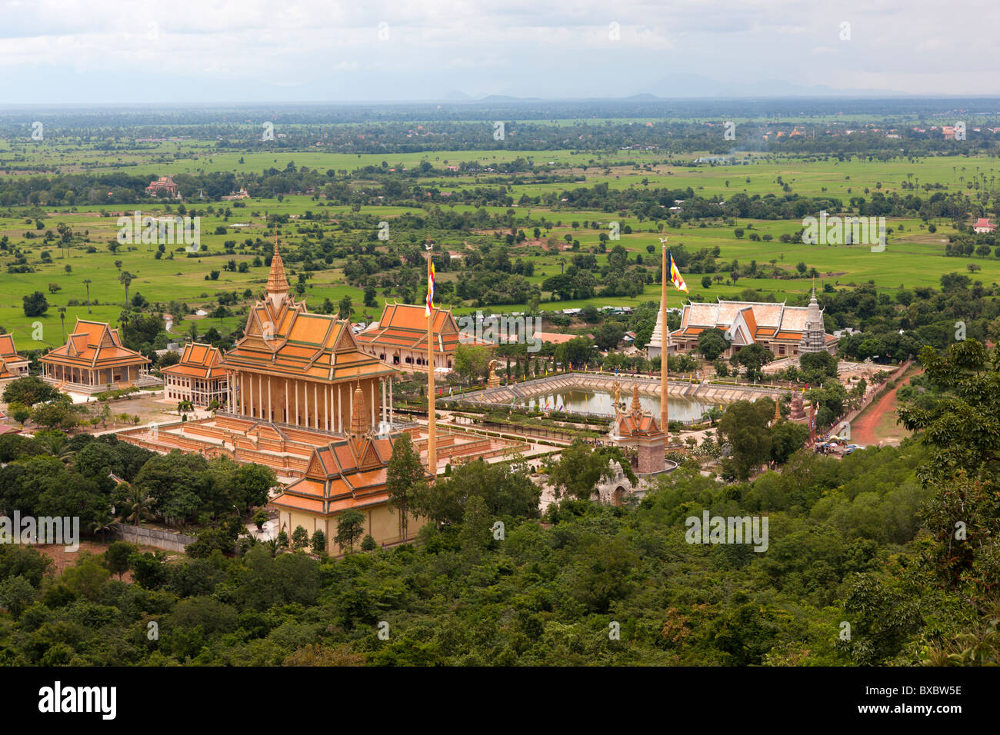

Kandal is a province of Cambodia located in the southeast portion of the country. It completely surrounds the Cambodian capital of Phnom Penh and borders the provinces of Kampong Speu and Takéo to the west, Kampong Chhnang and Kampong Cham to the north, Prey Veng to the east, and shares an international border with Vietnam (An Giang and Đồng Tháp) to the south. It is the second most populous province in Cambodia after the capital Phnom Penh. Its capital and largest city is Ta Khmau, which is approximately eight kilometres (5.0 mi) south of central Phnom Penh. Kandal is one of the wealthier provinces in the country.
Kandal province completely surrounds the capital Phnom Penh. The province is also a part of the greater Phnom Penh Metropolitan Area with more than a million people living in and around the province. While traveling out of Phnom Penh, the boundary between the two provinces is nearly unrecognizable.
The province consists of the typical plain wet area, covering rice fields and other agricultural plantations. The average altitude of the province is no more than 10 meters above sea level. The province also features two of the biggest rivers in the country, the Bassac and Mekong Rivers.
